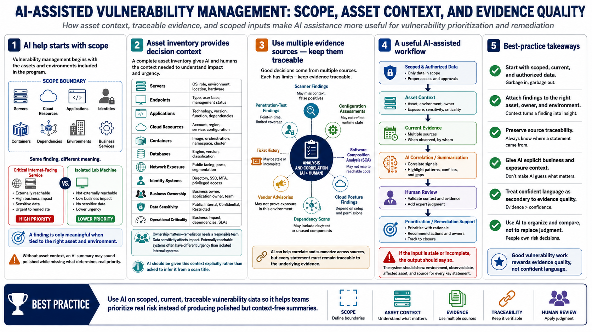

Scope, Assets, and Evidence Sources
Connecting to LMS... Progress: in progress

Narration
AI assistance is only as useful as the evidence it receives. Vulnerability management begins with scope: which assets, environments, applications, identities, containers, dependencies, cloud resources, and business services are included. A finding tied to a critical internet-facing service is different from the same finding on an isolated lab machine. Without asset context, an AI summary may sound polished while missing the facts that determine real priority.
Asset inventory should include servers, endpoints, applications, cloud resources, containers, databases, network exposure, identity systems, business ownership, data sensitivity, and operational criticality. Ownership matters because remediation needs a responsible team. Data sensitivity matters because exposure affects impact. Network reachability matters because externally reachable systems usually carry different urgency than isolated internal systems. AI should be given this context explicitly rather than asked to infer it from a scan title.
Evidence sources can include scanner findings, configuration assessments, software composition analysis, cloud posture findings, dependency scans, vendor advisories, ticket history, validation records, and penetration-test findings at a high level. Each source has limits. Scanners may miss context. Tickets may be stale. Vendor advisories may not prove exposure in a specific environment. AI can help correlate these sources, but the evidence must remain traceable.
A useful AI-assisted workflow starts with scoped, current, and authorized data. The system should know which environment a finding came from, when it was observed, which asset it affects, and which source produced it. If the input is stale or incomplete, the output should say so. Good vulnerability work rewards evidence quality, not confident language.